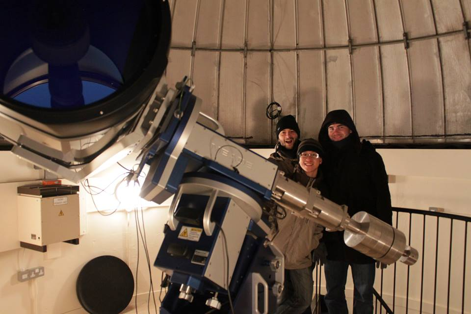
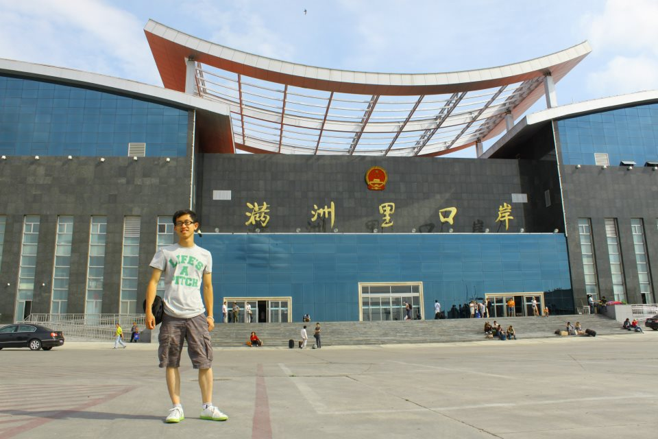
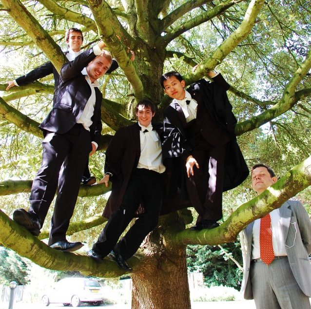

About me
I am PhD graduate working with Dr. Nigel Hambly and Dr. Nick Rowell at the Institute for Astronomy of the University of Edinburgh. A fast learner, self-taught programmer with experience in parallel computing with MPI in Python, and excellent design skills for poster and PowerPoint presentation. Experienced tutor in Maths and Physical Science subjects at University level.
- 
- 
- 
Left: The half-meter telescope at the Royal Observatory of Edinburgh.
Centre: Sino-Russian border, Manzhouli.
Right: Photo on the graduation day with our Director of Study.